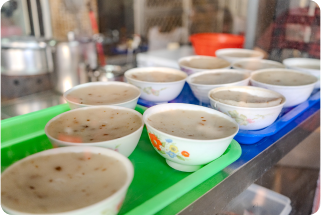
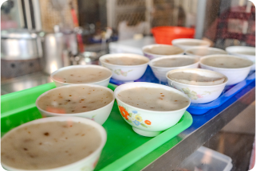
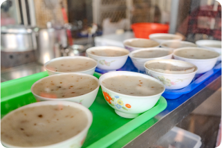

阿敏婆碗粿

古早味
銅板小吃
老字號製粿
綿密Q彈
在地推薦
營業時間
週一至週六07:50~17:00
週日09:00~17:00
地址
雲林縣西螺鎮延平路51巷6號
電話
0922641188
詳細介紹
「阿敏婆古早味碗粿」藏身西螺東市場角落一隅，每日新鮮手工製作的碗粿滋味令人一吃驚喜，在地飄香超過40年！淋上獨門特調醬汁佐傳統風味蘿蔔乾，還有那會黏口又黏心的Q彈碗粿，其質樸迷人的米香、豆油香連結了舊時光的回憶，好踏實的美味。
阿敏婆碗粿以純在來米漿為原料，需採買儲放一年以上的本島在來米。磨製米漿之前，得先將舊米浸泡三小時以上，除了必須抓準水的比例，米的含水量也是關鍵，磨好的米漿要用滾燙的熱水沖熟，糊化過程中必須不斷攪拌、緊盯米漿的熟度，太稠或太稀都會影響口感。這一切流程全靠經驗判斷，沒有食譜標準流程記錄，更沒有精確的數量標準。碗粿蒸熟後放涼後再加上炒過的鹹香蘿蔔乾、淋上特調油膏，微黏軟Q碗粿散發單存米香和醬汁的特殊鹹香，凸顯道地古早味。配上一碗有貢丸、豆腐和白蘿蔔綜合湯，搭配起來是相當樸實卻會嘔讓人難忘，真是隱藏在東市場巷弄裡的好味道。
「古早味肉粽」同樣是以簡單單純的口味凸顯古早味，糯米Q彈帶點黏密，裡頭包了一些炒至鹹香的內餡，並淋上特調油膏，同樣是以米香混合豆油味的小吃，值得試一試。
知道更多

 
